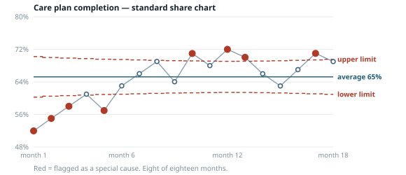
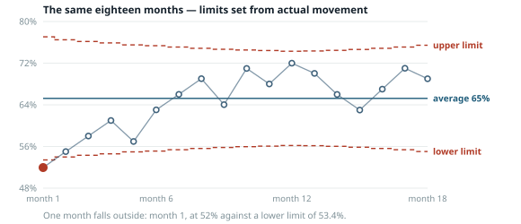

Introduction — why measurement is not enough, and what a control chart adds
Suppose the co-op tracks referral turnaround. This month it is 8.1 days; last month it was 7.2. Something got worse — or did it? The honest answer is that you cannot tell from those two numbers, and no amount of additional precision in measuring them will help.
The question is not what is the number but how much does this number move due to random variation.
In 1924, at Bell Labs Walter Shewhart solved this problem — how to distinguish random variation within a process from true change in processes. Plot the numbers in time order. Compute, from the point-to-point movement itself, how far the measure wanders when the process is unchanged. Draw those bounds. A point outside them, or a pattern too orderly to be chance, is worth investigating. Everything else is the process being itself.
| It is not | Because |
|---|---|
| A target line | Control Limits come from what the process actually does. A specification limit is target and it may be within the control limits or outside them. |
| A significance test | A statistical test asks whether a result could have come up by chance, and answers with odds. A control chart is not doing that, and you need no statistics at all to read one. Shewhart set the limits by asking a practical question instead: where do I draw the lines so that the least effort is wasted? Draw them too close to the middle and you spend your life chasing ordinary ups and downs that mean nothing. Draw them too far out and real changes slip past unnoticed. He settled on a distance that keeps both kinds of waste low, and a century of use across every kind of work has not improved on it. The lines mark where it starts to be worth asking what happened. They say nothing about how likely anything is. |
| A ranking | A ranking turns ordinary variation into a standing. Suppose the co-op posts a monthly list of its eight clinics ordered by referral turnaround. Someone is always last. Next month the order shuffles and someone else is last — not because anything changed at either clinic, but because these numbers move on their own. The clinic at the bottom gets scrutiny it did not earn, the clinic at the top gets credit it did not earn, and everyone learns to manage their position on the list. A chart asks a different question of each clinic: is this month different from that clinic's own history? Often the answer for all eight is no, and the ranking was measuring nothing at all. |
| A verdict on the people within the processes | Most variation belongs to the system (process), not the individuals inside it. SPC is how you find out when the measure is caused by something other than the structure of the process. You need this information before deciding whom to talk to. |
How you group your numbers before charting them decides what the chart is able to find. This sounds like a formatting detail. It is the whole thing.
Here is the everyday version. A school wants to know whether one classroom is doing something different. Chart every student's score in a single pile and the ordinary spread between students is so wide that no classroom could ever stand out — the differences you are hunting for are buried inside the differences you are not. Compare classroom averages instead and the classrooms become the thing that varies, so a genuinely different one shows up.
Nothing about the students changed. The grouping changed, and with it the question the chart is able to answer.
Most software makes this choice for you and never mentions it — it simply takes five rows at a time, forever. That default is a decision about what counts as normal, made by a program that knows nothing about your work.
The rule underneath it is short. Whatever variation you put inside a group, the chart treats as normal — that becomes the ruler it measures everything else against. Whatever is left between groups is what the chart is able to flag.
The differences between clinics become the thing being tested. The chart can find them.
Those same differences become part of the ruler. The chart can no longer see them, because you have told it they are normal.
This is why the same numbers can produce two opposite conclusions, and why neither chart is lying. Each answers the question it was asked. The grouping is how you asked it.
Twenty-four months, two clinics, one column of turnaround times from request to appointment.
Pooled into one chart, the limits come out at −10.5 to 25.7 days. The data only ever ranges from 3.7 to 11.8. Not one point signals. The chart says: the process is stable, predictable. Because the clinics data from two processes are very divergent month to month, the calculated limits are inflated enormously.
Subgrouped by clinic, 99.4% of all the variation turns out to be between the two clinics, not within them. North runs at 4.18 days. South runs at 10.99. Each is tight and stable on its own. They are two entirely separate processes that happen to share a spreadsheet. F(1,46) = 3957.
Shewhart called this pattern a mixture. The mixed or pooled chart is essentially useless.
The subgrouping panel in this tool states what fraction of the variation your grouping choice makes obvious or hides.
The case above is a difference you did not know was there. The opposite case is just as common: a change you made on purpose.
When the co-op adds a worker, simplifies a form, or moves a clinic, the numbers before and after are not one process. Charted as one, they produce a centre line describing a level the process never ran at, and limits wide enough to hide whatever happens next.
Take the CHW example shipped with the tool. A second community health worker joins at week 19 and weekly visits rise from about 42 to about 55.
| Charted as | Centre line | Limits | Points flagged |
|---|---|---|---|
| One process, all 30 weeks | 47.3 | 37.0 to 57.7 | 3 |
| Change marked at week 19 | 41.9 then 55.5 | 31.7–52.1, then 46.1–64.9 | 0 |
Zero is the number to look at. Once the change is accounted for, each phase is stable on its own — predictable before, predictable after, and the jump between them was the thing you did. The single-process chart flags three weeks that were entirely ordinary for the period they belong to.
Click the chart where the change happened and type what it was. The note, and any link you attach to the record of it, are drawn into the chart itself, so an exported or printed chart still says what happened at week 19. A marked change with no reason attached is half a record.
Some of what the co-op measures is a share — how many out of how many. What portion of enrolled members have a completed care plan, out of 1,200 enrolled.
There is a standard formula for how much a share like that should bounce around from month to month by chance alone, and with 1,200 people in the denominator it says: hardly at all. About four percentage points either side of the average, at most.
Real months do not behave that way. Across eighteen months, completion ranged from 52% to 72% — a twenty-point spread — for entirely ordinary reasons: who was on holiday, which families moved in or out, how a staffing gap happened to fall. The formula describes a world in which each of those 1,200 people is an independent coin flip with identical odds. People are not coin flips.
Use that formula anyway and you get a chart that flags almost everything. This is that chart.

Eight of the eighteen months fall outside the limits. Taken at face value, that would mean something extraordinary happened every other month for a year and a half. Nothing did.
What is wrong is the assumption the limits were built from. A model, in this sense, is nothing more than an assumption about how much a number ought to move on its own. This one assumed far too little movement, so it drew the lines far too close together, and then faithfully reported every ordinary month as an emergency. The chart is not finding problems in the clinics. It is finding that we handed it the wrong assumption.
The fix is to stop assuming and measure it: look at how much the shares actually moved from one month to the next, and set the limits from that instead. Here are the same eighteen months with that correction applied.

One month now falls outside — month 1, at 52% against a lower limit of 53.4%. That is the only month of the eighteen that behaved differently from the rest, and the only one where looking for a cause is likely to find one. The other seven were never signals. They were the wrong limits.
The tool runs this check on every share chart, reports how far off the standard assumption was, and applies the correction when you ask for it. If the assumption was right to begin with, the correction changes nothing.
The tool ships with four and leaves several out.
One number per period. The workhorse; use it unless there is a specific reason not to.
A proportion where the denominator moves every period. Limits step in and out to match.
Counts over a varying area of opportunity, per 1,000 member-months or per 100 visits.
Median line, no limits. Fewer assumptions, less power. Good for very short series.
Deliberately left out:
All are legitimate and some are excellent. They are absent because the first version of a tool should be the version a board will actually read. The subgrouping panel already does the diagnostic work that X̄–R and capability indices are usually reached for. If a real need appears — comparing fourteen clinics at once genuinely wants a funnel plot — that is the moment to add one, not before.
The Whatcom Wealth and Health work has four selected aspects: community health workers, the Shared Care Plan, a RenDanHeYi cooperative structure, and this. They are not four separate projects.
Shewhart at Bell Labs in the 1920s; Deming carrying it into management and into Japan; and for health care specifically, Marilyn K. Hart and Robert F. Hart, whose Statistical Process Control for Health Care (Duxbury/Thomson, 2002) is the reference this tool follows where sources disagree.
Both are mathematicians, and they advised the major SPC software vendors on getting the arithmetic right — which shows in their unusually careful treatment of the varying denominator, the case that health care lives in and manufacturing textbooks treat as an afterthought.
The Harts worked in Whatcom County for more than a year, and Whatcom appears in the book. This is not a method being imported here for the first time. It is a method coming back.
Most process measures, charted honestly, will turn out to be stable and unsatisfactory. No signals, and the average is not where anyone wants it. That is the most common and most useful finding, and it redirects the conversation from who had a bad month to what would have to change about how we work.
A picture a group can gather around, point at, and argue about without any training. A control chart may be the best one ever invented for that, and it was finished in 1924.